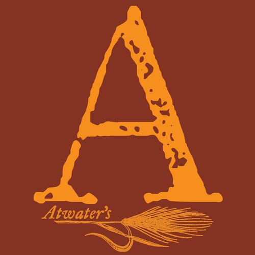

|

|
Atwater's Market815 Frederick Road. Catonsville, Maryland 21228
410-747-4120
|
Where do I start. This chicken salad is fantastic! The way the chicken meets the salad and the salad meets the chicken I indescribable! I almost felt like I was becoming one with the salad! Great job!
'I am bound to Tahiti for more men.' 'Very good. Let me board you a moment—I come in peace.' With that he leaped from the canoe, swam to the boat; and climbing the gunwale, stood face to face with the captain. 'Cross your arms, sir; throw back your head. Now, repeat after me. As soon as Steelkilt leaves me, I swear to beach this boat on yonder island, and remain there six days. If I do not, may lightning strike me!'A pretty scholar,' laughed the Lakeman. 'Adios, Senor!' and leaping into the sea, he swam back to his comrades.
'I am bound to Tahiti for more men.' 'Very good. Let me board you a moment—I come in peace.' With that he leaped from the canoe, swam to the boat; and climbing the gunwale, stood face to face with the captain. 'Cross your arms, sir; throw back your head. Now, repeat after me. As soon as Steelkilt leaves me, I swear to beach this boat on yonder island, and remain there six days. If I do not, may lightning strike me!'A pretty scholar,' laughed the Lakeman. 'Adios, Senor!' and leaping into the sea, he swam back to his comrades.
'I am bound to Tahiti for more men.' 'Very good. Let me board you a moment—I come in peace.' With that he leaped from the canoe, swam to the boat; and climbing the gunwale, stood face to face with the captain. 'Cross your arms, sir; throw back your head. Now, repeat after me. As soon as Steelkilt leaves me, I swear to beach this boat on yonder island, and remain there six days. If I do not, may lightning strike me!'A pretty scholar,' laughed the Lakeman. 'Adios, Senor!' and leaping into the sea, he swam back to his comrades.